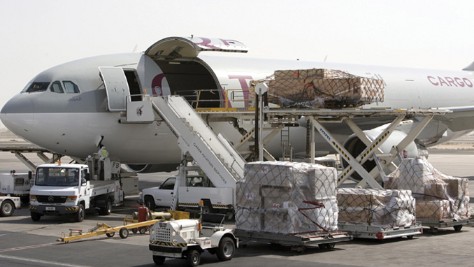

Ekspor Kratom Ke Amerika
Tanaman kratom (Mitragyna Speciosa) tumbuh subur di Desa Tuana Tuha, Kecamatan Kenohan, Kutai Kartanegara, Kalimantan Timur. Lantaran jadi sumber penghasilan warga di masa pandemi, daun kratom bahkan diekspor ke Amerika Serikat.
Read More
Singapore Airlines Cargo
Singapore Airlines Cargo (disingkat SIA Cargo) yaitu maskapai penerbangan kargo yang berbasis di Singapura. Maskapai penerbangan ini adalah anak perusahaan dari Singapore Airlines dan didirikan pada tahun 2001. SIA Cargo mengoperasikan 13 pesawat kargo dan mengendalikan semua pesawat Singapore Airlines. Kantor utama dari maskapai penerbangan ini berada di lantai lima SATS Airfreight Terminal 5.
Read More